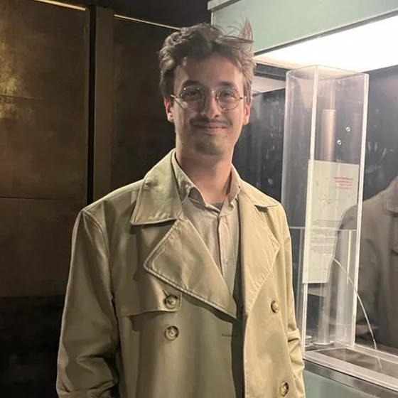

About
Sergi G. Leyva is a theoretical and computational physicist working on soft matter and nanofluidics. He is a postdoctoral researcher in the Center for Computation and Theory of Soft Materials at Northwestern University, where he works with Monica Olvera de la Cruz on nonequilibrium ion transport in nanochannels and on self-oscillating colloids, in collaboration with Kyle Bishop at Columbia University.
He received his PhD in physics, cum laude, from the University of Barcelona in 2024, working with Ignacio Pagonabarraga and Aurora Hernández-Machado on driven colloids, capillarity and electrolytes in patterned nanochannels, including a research stay at the University of Edinburgh. His work combines lattice-Boltzmann, dissipative particle dynamics, Brownian and Stokesian dynamics simulations with analytical theory, and has appeared in Physical Review Letters, Nature Communications, Science Advances and Nano Letters.

Positions and education
- 2024–presentPostdoctoral researcherCenter for Computation and Theory of Soft Materials, Northwestern University, Evanston, USAWith Monica Olvera de la Cruz. Nonequilibrium nanofluidics, iontronics and active colloids, within the Northwestern NSF MRSEC.
- 2019–2024PhD in Physics, cum laudeUniversitat de Barcelona and UB Institute of Complex Systems, SpainThesis Driven soft matter at the nanoscale, supervised by Ignacio Pagonabarraga and Aurora Hernández-Machado.
- 2023Visiting PhD researcherInstitute for Multiscale Thermofluids, University of Edinburgh, UKThree-month stay with Rodrigo Ledesma-Aguilar on capillarity and contact-line dynamics on lubricated surfaces.
- 2018–2019MSc in Atomistic and Multiscale Computational ModellingUniversitat de Barcelona and Universitat Politècnica de Catalunya, SpainSupervised by Ignacio Pagonabarraga and Pietro Tierno.
- 2014–2018BSc in PhysicsUniversitat de Barcelona, SpainThesis on diffusio-osmotic flow of electrolytes across a potential barrier, awarded best thesis of the graduating class.
Fellowships and funding
- 2024–presentNSF MRSEC postdoctoral fellowshipNorthwestern University, IRG-2: Orchestrated iontronics via dynamic hybrid ionic/electronic conductors
- 2021–2024PREDOCS-UB PhD fellowshipUniversitat de Barcelona
- 2019–2021Research staff, FET-Open project NANOPHLOW (766972)European Union Horizon 2020
Honours
- 2024Editors’ Suggestion and Featured in PhysicsPhysical Review Letters, for “Discontinuous transition in electrolyte flow through charge-patterned nanochannels”.
- 2020Cover article, Soft MatterFor “Dynamics and clogging of colloidal monolayers magnetically driven through a heterogeneous landscape”.
- 2018Bachelor thesis awardUniversitat de BarcelonaBest thesis of the graduating class in physics.
Talks and presentations
- Sep 2026CECAM–WE Heraeus school: Nonequilibrium physics in nanoconfinementLes Houches, FrancePoster: Active ionic fluxes induce symmetry breaking in charge-patterned nanochannels.
- Mar 2026APS Global Physics Summit (March Meeting)Denver, USATalk and poster: Self-oscillating synchronematic colloids.
- Jul 2025NITMB workshop on mathematical modelling, computational methods and biological fluid dynamicsChicago, USAInvited talk: Spontaneous symmetry breaking in active nanochannels.
- Jan 2025Gordon Research Conference: Complex Active and Adaptive Material SystemsVentura, USAPoster: Synchronization and assembly of self-oscillating colloids within living crystals.
- Sep 2023CECAM workshop: Challenges and opportunities in non-equilibrium soft matterManresa, SpainPoster: Discontinuous transition in charge-patterned nanochannels.
- Jun 2023Institute for Multiscale Thermofluids seminarUniversity of Edinburgh, UKInvited talk: Capillary imbibition in lubricant-coated channels.
- Mar 2023APS March MeetingLas Vegas, USATalk and poster: Spontaneous imbibition in lubricant-coated channels.
- Sep 2022International Soft Matter ConferencePoznań, PolandInvited talk: Hydrodynamic interactions, locomotion of magnetic swimmers and collective dynamics in driven colloidal matter.
- Sep 2022Cargèse summer school: Active matter and complex mediaCorsica, FrancePoster: Hydrodynamic synchronization and clustering in ratcheting colloidal matter.
- Jul 2022Workshop on Physics of Condensed MatterUniversitat de Barcelona, SpainInvited talk: Capillary imbibition in lubricant-coated channels and hydrodynamics in driven colloidal matter.
- Jun 2022IACIS 2022Brisbane, AustraliaPoster: Hydrodynamic synchronization and clustering in ratcheting colloidal matter.
- May 2022FisEs’22, Spanish Conference on Statistical PhysicsZaragoza, SpainPoster: Dynamics and clogging of colloidal monolayers magnetically driven through a heterogeneous landscape.
- Sep 2021Discrete Simulation of Fluid Dynamics (DSFD 2021)Viterbo, ItalyInvited talk: Lattice-Boltzmann simulation of imbibition in slippery liquid-infused porous surfaces.
Teaching and mentoring
- Yearly week-long seminar for Master’s students on lattice-Boltzmann and dissipative particle dynamics, with a hands-on LAMMPS session on electrolytes with explicit ions (since 2024).
- Mentoring of PhD students in dissipative particle dynamics and Stokesian dynamics simulations.
Peer review
Referee for Proceedings of the National Academy of Sciences, Journal of Fluid Mechanics, The Journal of Chemical Physics, The Journal of Physical Chemistry and Physics of Fluids.
Outreach
- Camins Infinits: six talks in primary and secondary schools around Barcelona, including a Python game in which pupils steer an active Brownian particle through a crowd of passive ones.
- Encontres amb el Tercer Cicle (35th edition): a “simulations versus experiments” debate introducing soft matter research to undergraduate physics students.
Collaborators
- Monica Olvera de la Cruz, Northwestern University
- Kyle J. M. Bishop, Columbia University
- Tine Curk, Johns Hopkins University
- Ignacio Pagonabarraga, Universitat de Barcelona
- Pietro Tierno, Universitat de Barcelona
- Aurora Hernández-Machado, Universitat de Barcelona
- Rodrigo Ledesma-Aguilar, University of Edinburgh
Additional training
IBM AI Engineering professional certificate (2026): machine learning with Python, deep learning and neural networks with Keras and PyTorch, and generative AI and large language models.
Contact
I am happy to hear about collaborations, seminar invitations and questions about the work. Write to sergigraley@gmail.com.
Center for Computation and Theory of Soft Materials, Northwestern University, Evanston, Illinois, USA